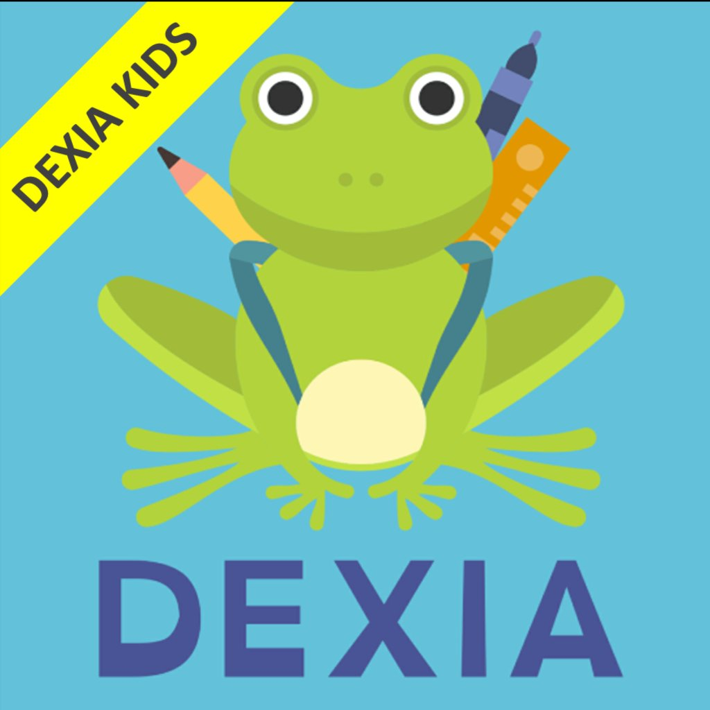

No es un déficit. Es una diferencia.
Información, apoyo y herramientas reales para adultos que conviven con la dislexia cada día — en el trabajo, en la lectura, en las relaciones y en la propia autoestima.
"La dislexia me dio una forma de razonar distinta y me encanta. Llego a la misma solución pero con herramientas distintas. Hoy veo muy bueno hacer las cosas de otra manera."
— Pedro, 30 añosLas investigaciones indican que cerca del 10% de la población tiene dislexia. Con el apoyo adecuado, estas personas pueden destacarse y ser protagonistas de su propia vida. No solo importa acompañar a los niños en la etapa escolar: los adultos también merecen apoyo en sus decisiones y en su adaptación al mundo.
Recorré el sitio según lo que necesites hoy
Cada sección reúne información clara y herramientas concretas. Entrá por donde te haga sentido.
¿Qué es la dislexia?
Una forma neurodivergente de procesar el lenguaje. Sin mitos ni culpa.
Leer →Signos en el adulto
Cómo se manifiesta más allá de la lectura: memoria, organización, fatiga.
Leer →Autodiagnóstico
Cuestionario orientativo + espacio de reflexión sobre tu experiencia.
Empezar →Estrategias de estudio
Métodos visuales, auditivos y de organización que funcionan.
Leer →Búsqueda de trabajo
Revelar o no la dislexia, elegir el trabajo correcto, tus fortalezas.
Leer →Fluidez lectora
Sí, es posible leer con fluidez. Con práctica, constancia y paciencia.
Leer →Viviendo con dislexia
Organización, memoria, relaciones, tiempo y autoestima en el día a día.
Leer →Apoyo profesional
Acompañamiento psicológico para adultos con dislexia.
Contactar →El cerebro disléxico también tiene fortalezas
Cuando el procesamiento del lenguaje funciona distinto, otras capacidades suelen desarrollarse con fuerza. Reconocerlas es recuperar una autopercepción justa.
Pensamiento visual
Ver patrones, conexiones y soluciones que otros no detectan.
Visión global
Entender el "todo" antes que las partes; resolver problemas complejos.
Creatividad
Pensamiento lateral y comprensión intuitiva de cómo funcionan las cosas.
Una forma de pensar no es mejor que otra. Una mente con dislexia aporta una mirada completamente distinta y novedosa.
El trabajo de la Dra. Isabel Galli
Gran parte de la conciencia sobre la dislexia en el mundo hispanohablante le debe mucho a la Dra. Isabel Galli, una de las voces que impulsaron la Ley 27.306 en la Argentina. Doctora en Fonoaudiología especializada en las perturbaciones de la comunicación humana, con trabajos junto a Canadá, es además Embajadora Argentina de la OIDEA (Organización Iberoamericana de las Dificultades Específicas del Aprendizaje).

¿Tenés hijos pequeños?DEXIA KIDS, para acompañar los primeros pasos
Como la dislexia tiene una base hereditaria, la estimulación temprana del lenguaje puede marcar una gran diferencia. DEXIA KIDS es una app que ayuda a los chicos de 3 a 8 años a dar sus primeros pasos en la lectura y la escritura, jugando con las letras y los sonidos.
Conocé DEXIA KIDS